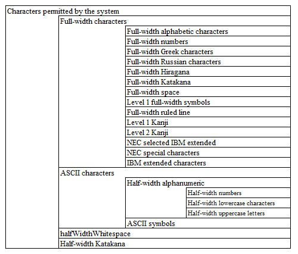

9.1.4.2. Procedure to add available characters¶
9.1.4.2.1. Summary¶
In projects generated from archetypes, there are the following three patterns by which validation error messages for available characters can be configured.
- Those that can be used simply by configuring the message ID
- Those requiring component definition, which cannot be used simply by configuring the message ID
- Those that cannot be used alone
9.1.4.2.2. Available character set definition¶
9.1.4.2.2.1. Character set inclusion relation¶
The available character sets consist of multiple character sets (that is, there is an inclusion relation).
The figure representing a character set is shown below:
9.1.4.2.2.2. Location of the character set definition¶
For the following character set, the characters included in each character set are defined by literals in the configuration file in the default configuration (jar).
- Full-width alphabets
- Full-width numbers
- Full-width Greek characters
- Full-width Russian characters
- Full-width Hiragana
- Full-width Katakana
- Full-width space
- Level 1 full-width symbols
- Full-width ruled line
- Level 1 Kanji
- Level 2 Kanji
- NEC selected IBM extended
- NEC special characters
- IBM extended characters
- Half-width numbers
- Half-width lowercase characters
- Half-width uppercase letters
- ASCII symbols
- Half-width kana
Tip
It is defined in the following resources of the default configuration (jar)
nablarch/core/validation/charset-definition.config
However, for the following character set, Unicode code points are defined in the component configuration file.
- halfWidthWhitespace
Tip
It is defined in the following resources of the default configuration (jar)
nablarch/core/validation/charset-definition.xml
9.1.4.2.3. How to Configure¶
How to configure each available character is shown below.
9.1.4.2.3.1. Available characters that can be used simply by configuring the message ID¶
- Characters permitted by the system
- Full-width characters
- Half-width alphanumeric
- ASCII characters
- Half-width numbers
- Full-width Katakana
The validation error messages for these available characters can be used configuring the message ID.
See the Default configuration list for the placeholder corresponding to the specified message ID.
See Procedure for Changing the Message ID and Message Content for the procedure to change the message ID and the message content.
9.1.4.2.3.2. Available characters that cannot be used simply by specifying the message ID¶
- Full-width alphabets
- Full-width numbers
- Full-width Greek characters
- Full-width Russian characters
- Full-width Hiragana
- Level 1 full-width symbols
- Full-width ruled line
- Level 1 Kanji
- Level 2 Kanji
- Full-width space
- Half-width lowercase characters
- Half-width uppercase letters
- ASCII symbols
- Half-width kana
- NEC selected IBM extended
- NEC special characters
- IBM extended characters
The validation error messages for these available characters can be used by carrying out component definition.
Tip
The reason why the message IDs for the above available characters are not included in the default configuration is that if a message ID is not defined, a warning will be output when starting the Nablarch application.
9.1.4.2.3.3. Available characters that cannot be used alone¶
- halfWidthSpace
9.1.4.2.4. How to configure available characters that cannot be used simply by specifying the message ID¶
You need to add component definitions to the Nablarch configuration file (web-component-configuration.xml and the like in the case of web projects) for available characters that cannot be used simply by specifying the message ID.
The following is an example of a definition. Users only need to configure only what is required to be used from these.
<!-- Nablarch core function -->
<import file="nablarch/core.xml"/>
<!-- Define after nablarch/core.xml to override the default configuration of Nablarch -->
<!-- Full-width alphabets -->
<component name="Full-width alphabets" class="nablarch.core.validation.validator.unicode.LiteralCharsetDef">
<property name="allowedCharacters" value="${nablarch.zenkakuAlphaCharset.allowedCharacters}"/>
<property name="messageId" value="${nablarch.zenkakuAlphaCharset.messageId}"/>
</component>
<!-- Full-width numbers -->
<component name="Full-width numbers" class="nablarch.core.validation.validator.unicode.LiteralCharsetDef">
<property name="allowedCharacters" value="${nablarch.zenkakuNumCharset.allowedCharacters}"/>
<property name="messageId" value="${nablarch.zenkakuNumCharset.messageId}"/>
</component>
<!-- Full-width Greek characters-->
<component name="Full-width Greek characters" class="nablarch.core.validation.validator.unicode.LiteralCharsetDef">
<property name="allowedCharacters" value="${nablarch.zenkakuGreekCharset.allowedCharacters}"/>
<property name="messageId" value="${nablarch.zenkakuGreekCharset.messageId}"/>
</component>
<!-- Full-width Russian characters -->
<component name="Full-width Russian characters" class="nablarch.core.validation.validator.unicode.LiteralCharsetDef">
<property name="allowedCharacters" value="${nablarch.zenkakuRussianCharset.allowedCharacters}"/>
<property name="messageId" value="${nablarch.zenkakuRussianCharset.messageId}"/>
</component>
<!-- Full-width Hiragana -->
<component name="Full-width Hiragana" class="nablarch.core.validation.validator.unicode.LiteralCharsetDef">
<property name="allowedCharacters" value="${nablarch.zenkakuHiraganaCharset.allowedCharacters}"/>
<property name="messageId" value="${nablarch.zenkakuHiraganaCharset.messageId}"/>
</component>
<!-- Full-width symbols -->
<component name="Level 1 full-width symbol" class="nablarch.core.validation.validator.unicode.LiteralCharsetDef">
<property name="allowedCharacters" value="${nablarch.jisSymbolCharset.allowedCharacters}"/>
<property name="messageId" value="${nablarch.jisSymbolCharset.messageId}"/>
</component>
<!-- Full-width ruled line -->
<component name="Full-width ruled line" class="nablarch.core.validation.validator.unicode.LiteralCharsetDef">
<property name="allowedCharacters" value="${nablarch.zenkakuKeisenCharset.allowedCharacters}"/>
<property name="messageId" value="${nablarch.zenkakuKeisenCharset.messageId}"/>
</component>
<!-- Level 1 Kanji -->
<component name="Level 1 Kanji" class="nablarch.core.validation.validator.unicode.LiteralCharsetDef">
<property name="allowedCharacters" value="${nablarch.level1KanjiCharset.allowedCharacters}"/>
<property name="messageId" value="${nablarch.level1KanjiCharset.messageId}"/>
</component>
<!-- Level 2 Kanji -->
<component name="Level 2 Kanji" class="nablarch.core.validation.validator.unicode.LiteralCharsetDef">
<property name="allowedCharacters" value="${nablarch.level2KanjiCharset.allowedCharacters}"/>
<property name="messageId" value="${nablarch.level2KanjiCharset.messageId}"/>
</component>
<!-- Full-width space -->
<component name="Full-width space" class="nablarch.core.validation.validator.unicode.LiteralCharsetDef">
<property name="allowedCharacters" value="${nablarch.zenkakuSpaceCharset.allowedCharacters}"/>
<property name="messageId" value="${nablarch.zenkakuSpaceCharset.messageId}"/>
</component>
<!-- Half-width alphabets -->
<component name="Half-width alphabets" class="nablarch.core.validation.validator.unicode.LiteralCharsetDef">
<property name="allowedCharacters" value="${nablarch.lowerAlphabetCharset.allowedCharacters}"/>
<property name="messageId" value="${nablarch.lowerAlphabetCharset.messageId}"/>
</component>
<!-- Half-width uppercase letters -->
<component name="Half-width uppercase letters" class="nablarch.core.validation.validator.unicode.LiteralCharsetDef">
<property name="allowedCharacters" value="${nablarch.upperAlphabetCharset.allowedCharacters}"/>
<property name="messageId" value="${nablarch.upperAlphabetCharset.messageId}"/>
</component>
<!-- ASCII symbols -->
<component name="ASCII symbols" class="nablarch.core.validation.validator.unicode.LiteralCharsetDef">
<property name="allowedCharacters" value="${nablarch.asciiSymbolCharset.allowedCharacters}"/>
<property name="messageId" value="${nablarch.asciiSymbolCharset.messageId}"/>
</component>
<!-- Half-width Katakana -->
<component name="Half-width Katakana" class="nablarch.core.validation.validator.unicode.LiteralCharsetDef">
<property name="allowedCharacters" value="${nablarch.hankakuKanaCharset.allowedCharacters}"/>
<property name="messageId" value="${nablarch.hankakuKanaCharset.messageId}"/>
</component>
<!-- NEC selection IBM extension-->
<component name="NEC selection IBM extension" class="nablarch.core.validation.validator.unicode.LiteralCharsetDef">
<property name="allowedCharacters" value="${nablarch.necExtendedCharset.allowedCharacters}"/>
<property name="messageId" value="${nablarch.necExtendedCharset.messageId}"/>
</component>
<!-- NEC special characters -->
<component name="NEC special characters" class="nablarch.core.validation.validator.unicode.LiteralCharsetDef">
<property name="allowedCharacters" value="${nablarch.necSymbolCharset.allowedCharacters}"/>
<property name="messageId" value="${nablarch.necSymbolCharset.messageId}"/>
</component>
<!-- IBM extended characters -->
<component name="IBM extended characters" class="nablarch.core.validation.validator.unicode.LiteralCharsetDef">
<property name="allowedCharacters" value="${nablarch.ibmExtendedCharset.allowedCharacters}"/>
<property name="messageId" value="${nablarch.ibmExtendedCharset.messageId}"/>
</component>
See Procedure for Changing the Message ID and Message Content for the procedure to change the message ID and the message content.